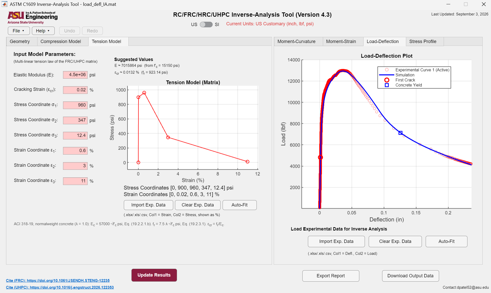
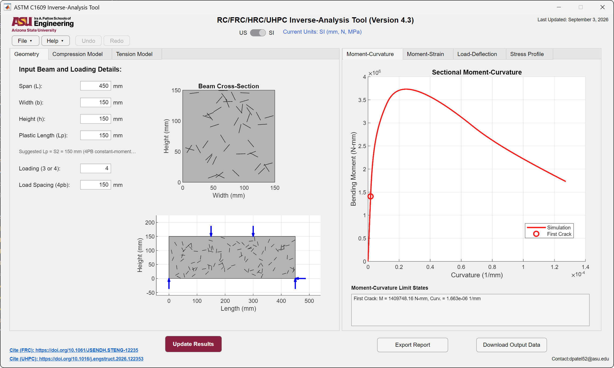
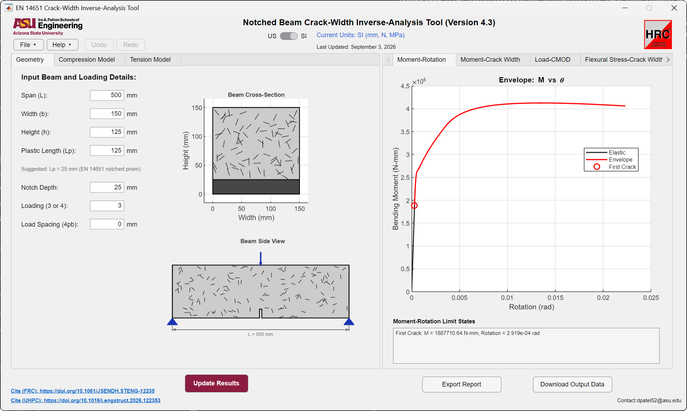
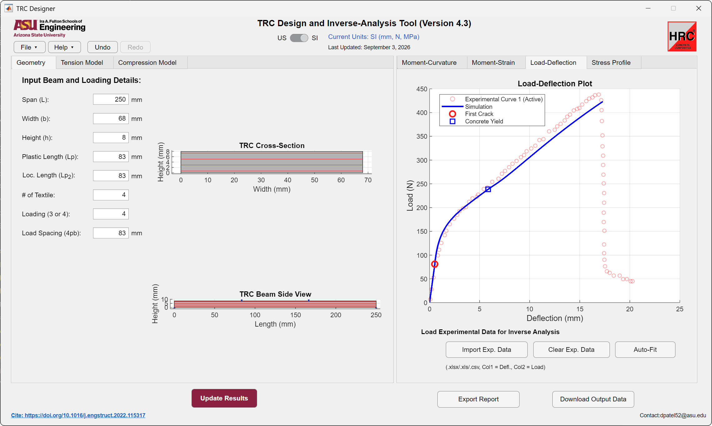
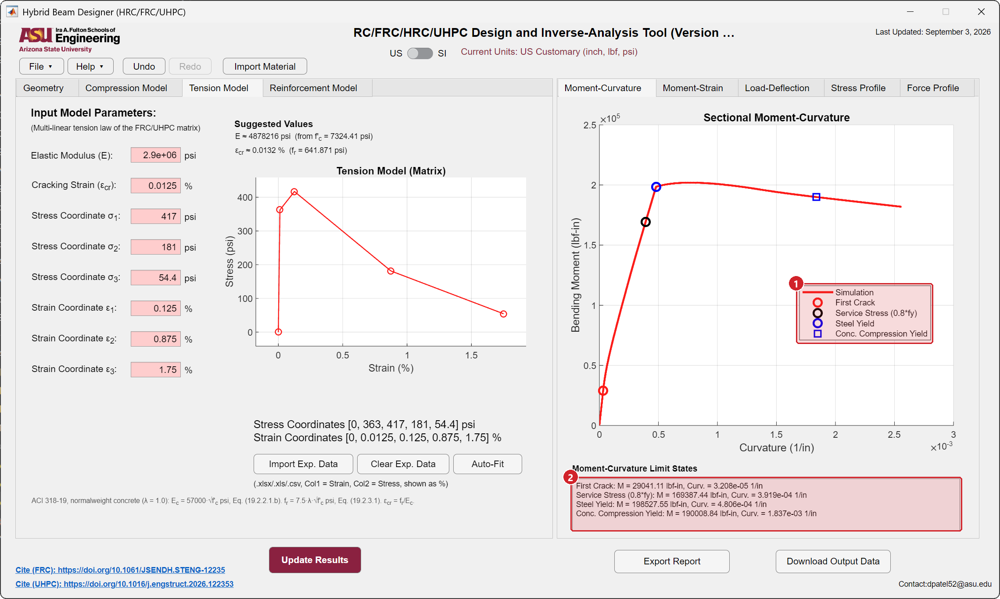
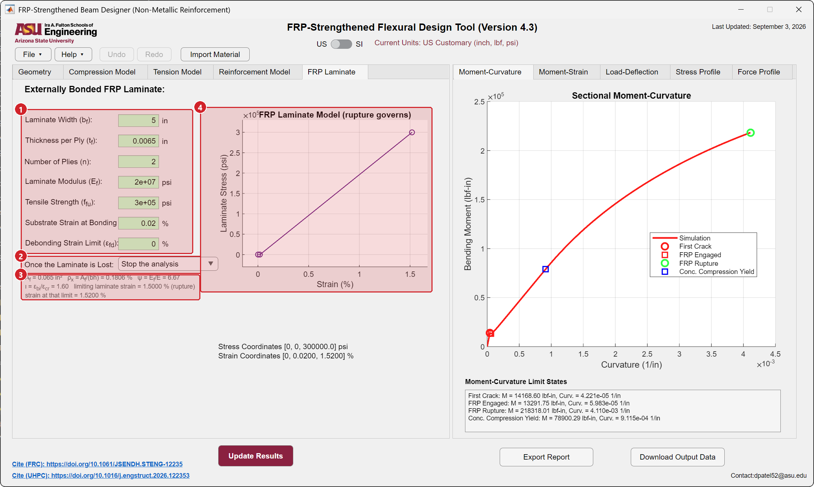
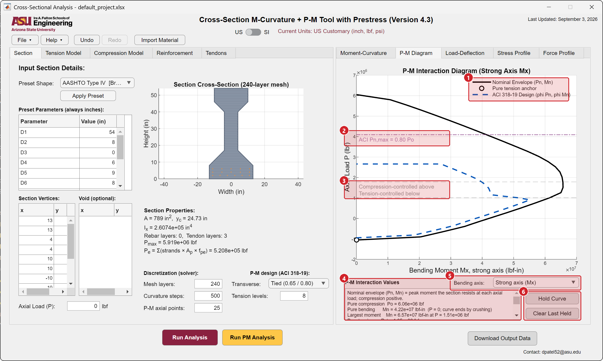

HRC Designer
Version 4.3 · Windows · FreeAnalysis and design software for members made with fiber reinforced concrete, hybrid reinforced concrete, UHPC, and textile reinforced concrete. Flexural test data gives the material properties, which then carry into section and member calculations in SI or US units.

Closed-form section analysis
Multi-linear tension, compression, and reinforcement laws solved stage by stage without iteration, so results update as a value is typed or a control point is dragged.
Inverse analysis
Auto-Fit identifies the tension law from a measured curve by nonlinear least squares with multiple starts, in seconds.
Limit states and P-M
First crack, service, yield, crushing, and rupture marked on every curve, with nominal and ACI 318-19 design interaction diagrams for any section.
Reports and data
HTML engineering report, an Excel workbook of every curve, project files, SI and US units, and worked example projects.
Modules
Determine material properties
ASTM C1609
Inverse analysis of unnotched beams in four-point bending. The tension law is written in stress and strain.
Manual: ASTM C1609
EN 14651
Inverse analysis of notched beams from the load and crack mouth opening record. The tension law is written in stress and crack width.
Manual: EN 14651
Textile reinforced concrete
Inverse analysis of TRC plates in flexure.
Manual: Textile reinforced concrete
Analyse a reinforced member
Hybrid beam analysis
Beams that combine a fiber reinforced matrix with steel reinforcing bars, from geometry and reinforcement to moment-curvature and the force profile.
Manual: Hybrid beam analysis
FRP rebar and strengthening
Sections with FRP bars and with externally bonded FRP laminates.
Manual: FRP rebar and strengthening
Analyse any cross-section
Cross-sectional analysis
Arbitrary sections with reinforcing bars and prestressing tendons. Moment-curvature, load-deflection, and P-M interaction diagrams.
Manual: Cross-sectional analysis
Screen recordings
Automated inverse analysis across test standards
Four cases run in sequence: EN 14651 notched beam and ASTM C1609 unnotched beam, each for steel fiber reinforced concrete and for UHPC. The left panel overlays the analytical model on the experimental curve, the upper right shows the residual, and the lower right shows the identified tension law. Inverse-analysis time is printed for each run and stays between 0.4 and 2.6 seconds.
Working through a section in the interface
Section geometry, tension model, and compression model are entered on the left; moment-curvature, moment-strain, load-deflection, and stress profile are tabbed on the right. The AutoFit run reports a fit score and the calibrated elastic modulus, and the limit-state box lists first crack, crack localization, and compressive yield.
AutoFit on EN 14651 crack-mouth-opening data
Load against crack mouth opening displacement, with the fitted analytical model tracking the experimental curve and the identified stress against crack width law updating alongside it.
Stress profile swept through crack width
Crack width is swept from zero to the final response coordinate. The cross-section on the left shows the crack extending and the neutral axis migrating upward, while the stress distribution on the right redistributes into the compression zone.
Strain and stress distribution through the section
Bottom tensile strain is swept from zero. The linear strain profile drives the stress profile, which departs from linearity once the tension law passes first crack.
Monte Carlo simulation of flexural response
One thousand realizations of the quadrilinear UHPC tension model, each propagated to a load-deflection curve through the closed-form flexural model. Curves are coloured by peak tensile stress. The run completes in 11 seconds.
Validation
The cross-sectional analysis module reproduces four published flexure tests of prestressed UHPC girders, from a pretensioned I-girder on a 7.09 m span to FHWA Girder 80F on a 23.93 m span.
Validation results on hrcdesigner.comPublications behind the software
Journal 2023
Generalized Nonlinear Moment-Curvature Model for Serviceability-Based Design of Hybrid Reinforced Concrete
Journal of Structural Engineering, ASCE
Journal 2026
Limit-state based design of hybrid reinforced UHPC flexural beams using parametric modeling
Engineering Structures
Journal 2025
Back-calculation of mechanical properties of fiber-reinforced concrete in tunnel lining segments
Structural Concrete
Journal 2023
Analytical moment-curvature solutions for generalized textile-reinforced concrete sections
Engineering Structures
Journal 2021
Low-Velocity Impact Experiments and Modeling of TRC Skin-Aerated Concrete Core Sandwich Composites
Materials
Download
Version 4.3, released September 3, 2026. Free for research, education, and professional evaluation.
- Windows 10 or 11, 64-bit
- No MATLAB license needed. The installer downloads the MATLAB Runtime R2023a, 2 GB, if it is not already installed.
Release notes · Questions to dpatel52@asu.edu
Cite HRC Designer
Patel, D., Pleesudjai, C., and Mobasher, B. An Inverse Analysis and Design software for FRC, UHPC, TRC and HRC Cement Composites (HRC Designer), version 4.3, Arizona State University, 2026. DOI 10.13140/RG.2.2.12492.53127.